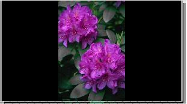
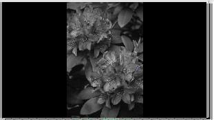

1.1.1. Proyecto Ejemplo 4
Paso Previo: la finalidad de este proyecto ejemplo es mostrar la aplicación de diversos efectos, modificar sus parámetros y descubrir su función sobre nuestra edición de video.
Para realizar el proyecto, en su primera fase, importaremos un clip de presentación de diapositivas. Para ello vamos utilizar las imágenes de los Recursos del Tema de video.
Proyecto 4.
1. Entra en Aplicaciones / Sonido y Video / Kdenlive.
2. Crearemos un proyecto nuevo (HD Ready) con dos pistas de video y, por el momento, ninguna de audio. Crearemos el proyecto en la carpeta Borrador.
Dicho proyecto le guardaremos con el nombre de proyecto4_kdenlive: File / Save as.
3. En árbol del proyecto, utiliza el botón derecho del ratón y procedemos agregar un clip de presentación de diapositivas de 9 segundos de duración del fotograma. Este clip le denominaremos proyecto4.
4. Utilizando la herramienta de corte de nuestras herramientas de ajuste (parte inferior) o utilizando el botón derecho en la pista podemos partir nuestro video en pequeños fragmentos (8) de 30 segundos aproximadamente.
5. Seleccionamos nuestro primer fragmento. Aplicaremos un efecto Chroma Hold (Muestra un único color, convirtiendo a escala de grises el resto de la imagen).
- Seleccionamos nuestro primer fragmento (1).
- Localizamos en el listado de Efectos / Colour / Chroma hold (2). Al seleccionarlo se nos agrega el efecto a nuestra pila de efectos.
- Seleccionamos el color que deseamos que se muestre (3) e indicamos la varianza.
-
Para la selección del color: Hacemos clic (a) en la clave del color y podemos elegir el color que deseamos dejar activo y el resto en escala de grises, bien en la paleta general (b), en los colores determinados (c), indicar los valores (d) o, utilizando la herramienta de recoge color (d), seleccionar el color deseado en el monitor del proyecto
-
-
-
Con la varianza (0 - 100) podemos ponderar el grado de precisión de nuestros colores. Si elegimos un color alto, el clip casi es impreceptible la tonalidad gris, mientras si disminuimos los valores observaremos que se muestra la imagen con un sólo color y el resto gris. Si disminuyes a 0, todo queda en gris. En nuestro ejemplo aplicamos una varianza de 35, aunque dependerá del sistema anterior utilizado para recoger el color. La idea es que sólo se muestre la flor en color.
-
|
varianza=100 |
 varianza=35 |
|
varianza=10 |
 varianza=0 |
Este efecto puede ser muy válido para destacar una imagen dentro de unos frames.
6. Seleccionamos nuestro segundo fragmento. Aplicaremos el efecto invertir: Listado de Efectos / Colour / Invertir. Este efecto convierte los colores de la imagen a sus opuestos (haciendo un negativo). Este efecto no tiene parámetros para modificar.
7. Añadiremos un segundo efecto al fragmento anterior. En este caso Listado de Efectos / Colour / sepia. Este efecto permite simular una antiguedad en nuestra imagen.
- Para añadir un segundo efecto, hacemos clic en añadir (1) o directamente en el efecto del listado. Observaremos que, en la zona 6, aparecen activos los dos efectos. Podemos, en un momento dado, activar o desactivar los efectos de nuestra pila de efectos.
- Podemos con las flechas (2 y 3) cambiar el orden de los efectos. Si modificamos los valores de nuestros parámetros podríamos guardar ese efecto con un nuevo nombre (4).
- Igualmente, si deseamos elimar un efecto (5) de nuestra pila sólo tenemos que seleccionarlo y utilizar el botón (5).
- Los parámetros a modificar en el efecto sepia son la crominancia vertical y horizontal (ambos valores van de 0-255). La crominancia es el componente que contiene la información sobre el color de una señal de vídeo.
8. Seleccionamos el tercer fragmento de nuestra línea de tiempo. Aplicaremos uno de los efectos para corregir el balance de blancos y la temperatura del color. En el listado de efectos / Colour correction disponemos de los diversos efectos para balancear los colores de los frames.
- Seleccionamos (1) el efecto balance de blancos;
- Elegimos un color neutro (2) con el que deseamos combinar la tintura verde. Por defecto es blanco.
- Modificamos la tintura verde (3).
9. En el cuarto fragmento aplicaremos un efecto del grupo Crop & Scale. Estos efectos tienen que ver con recortar de forma selectiva parte de la imagen y escalarla.
Para ello indicaremos el corte de la izquierda (clip left), derecha (clip right), superior (clip top), Inferior (clip bottom), la escala (vertical y horizontal) y la posición del clip de corte en la pantalla (Tilt X e Y).
Este efecto es recomendable observar en el monitor del proyecto antes de aplicarlo.
10. En el quinto fragmento de nuestro video le aplicaremos un efecto del grupo Distort (distorsión). Hemos elegido el DistortOr y debemos aplicar una amplitud y una frecuencia. En mi ejemplo he utilizado 291 y 25 respectivamente.
Añadiremos un efecto para corregir el enfoque con LensCorrection. Juguemos con los valores para conseguir un efecto diferente a lo esperado. Para ello modificamos el centro vertical y horizontal, la corrección de las esquinas (edges) y modificamos el brillo. El efecto nos distorsionará las imágenes de forma diferente a lo habitual.
11. En nuestro sexto fragmento aplicaremos efectos graciosos (fun). Podemos convertir al carboncillo (simular que ha sido dibujado) las imágenes de nuestro fragmento. Para ello modificamos las dispersiones (como si explotáramos nuestra imagen) horizontal y vertical, la escala o grado de marcado de los bordes de los elementos de la imagen y la mezcla de colores (0-blanco y negro, 10 - color total). Si invertimos los colores el efecto mejora en calidad.
Un efecto interesante es el Oldfilm que podemos simular en nuestro video los problemas de los antiguos videos analógicos.
12. En el penúltimo fragmento aplicaremos alguno de los efectos de miscelánea. En este caso aplicaremos el efecto girar y cizallar. Este efecto produce un movimiento en nuestras imágenes y las girar según los parámetros que se introduzcan. Es muy válido para hacer una introducción de una secuencia y que se desea que llame la atención.
En este efecto debemos girar la X, Y y la Z hasta ver el efecto que deseamos observar en la imagen (tipo estático). A continuación debemos indicar la rotación que queremos que se produzca (animada). Si deseamos que la imagen aumente o disminuya su tamaño en las rotaciones utilizamos cizallar X e Y. Por su parte, el cizallamiento animado es para mostrar la fomra como deseamos que se realicen los giros. Igualmente, podemos ubicar la imagen en el cuadro (agrandando o encogiendo).
Primera Parte -
Jo.R.C.A. 2004 - 2011

Edición de Audio y Video con Software Libre by José Ramón Cerdeira Alonso is licensed under a Creative Commons Reconocimiento-No comercial-Compartir bajo la misma licencia 3.0 España License